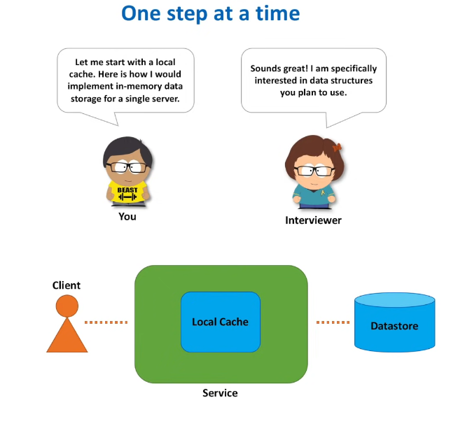
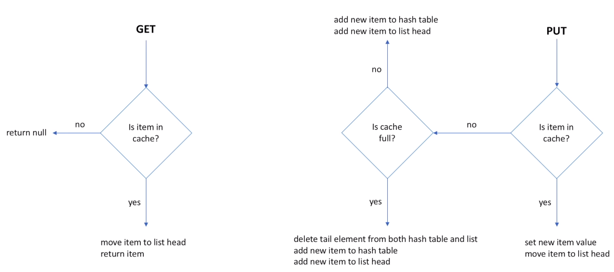
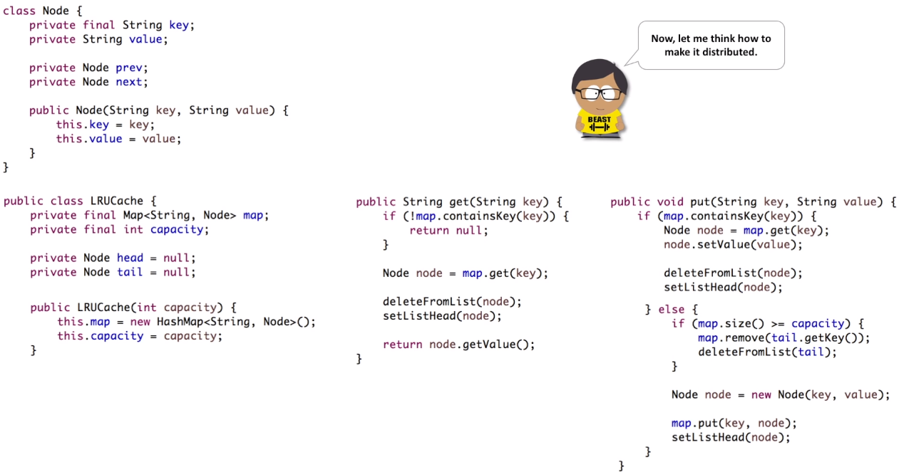
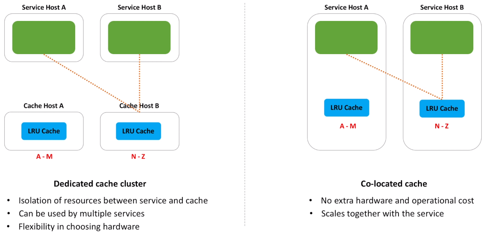
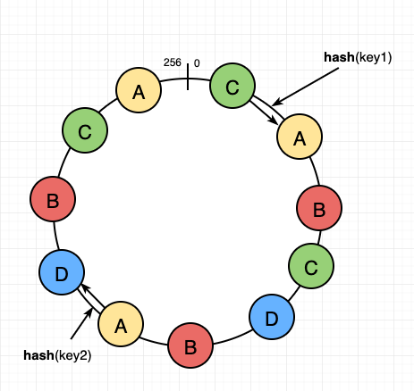
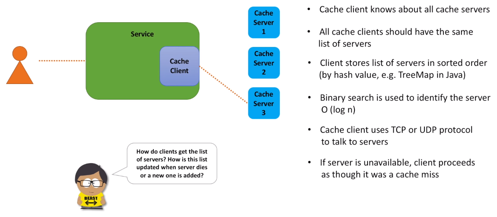
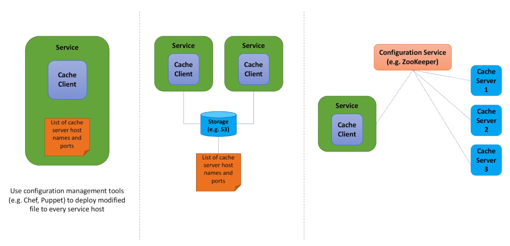
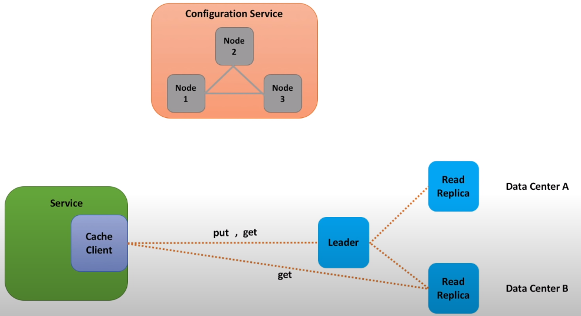

Distributed Cache
Problem Statement
A web application backed by a data store. This data store may be a database or another web service. Client makes a call to the web application, which in turn makes a call to the data store and result is returned back to the client. There may be several issues with this setup. First, calls to the data store may take a long time to execute or may utilize a lot of system resources. It would be good to store at least some results of these calls in memory, so that these results are retrieved and returned back to the client much faster. And if the data store is down or experiences a performance degradation and calls to the data store start to fail, our web application may still process requests as usual, at least for some period of time. So, storing data in memory will help to address these issues. When client request comes, we first check the cache and try to retrieve information from memory. And only if data is unavailable or stale, we then make a call to the datastore.
And why do we call it a distributed cache? Because amount of data is too large to be stored in memory of a single machine and we need to split the data and store it across several machines. Caches are everywhere nowadays. Even on this channel, remember when we designed distributed message queue or notification service or rate limiter, all those designs relied on a cache of some sort.
Functional Requirements
- put(key, value) : Stores object in the cache under some unique key
- get(key) : Retrieves object from the cache based on the key.
Non-Functional Requirements
- Scalable (scales out easily together with increasing number of requests and data) : High scalability will help to ensure our cache can handle increased number of put and get requests. And be able to handle increasing amount of data we may need to store in the cache.
- Highly Available (tolerates hardware / network failures, no single point of failure) : High availability will help to ensure that data in the cache is not lost during hardware failures and cache is accessible in case of network partitions. This will minimize number of cache misses and as a result number of calls to the datastore.
- Highly Performant (fast put / get) : High performance is probably the number one requirement for the cache. The whole point of the cache is to be fast as it is called on every request.
Interview Tip
If you need to design a distributed system, think about the following 3 requirements first:
- Scalability
- Availability
- Performance
- And if data persistence is important think of durability as well.
These 4 will give you and your interviewer a lot of room for discussion. If you recollect a CAP theorem, availability requirement may be replaced with consistency.Remember that interviewer is your friend and you both have the same goal. Your goal is to provide as many positive data points as possible. And the interviewer's goal is to collect as many data points as possible. In practice it means that you should start approaching any design problem with some small and simple steps. And evolve your solution with every next step. This is a win-win situation. You demonstrate progress, ability to deal with ambiguity and simplify things. While the interviewer gets all the necessary data points to bring them to the table and champion your case in the discussion with other interviewers from the interview loop.
Local Cache

- Need a HashMap to add and retrieve key,value pairs in constant time.
- But when HashMap is full, we need to evict some old data. What data should be evicted?
- In short, HashMap doesn't know which entry has been used recently to create eviction policy. We need one more data structure to keep track of what was used when.
- Doubly Linked List
LRU cache algorithm explanation

- When GET operation is called, we first check if this item is in the cache (hash table). If item is not in the cache, we return null immediately. If item is found, we need to move it to the head of the list and return the item back to the caller. And why do we need to move the item to the list head? To preserve the order of use. Item at the head of the list is the most recently used. And item at the tail of the list is the least recently used. So, when cache is full and we need to free space for a new item, we remove an item at the tail of the list.
- When PUT operation is called, we also check if item is in the cache. And if found, we update the item value and move the item to the head of the list. In case item is not in the cache, we need to check if cache is full. If cache has capacity (not full), we simply add this item to the hash table and to the list (at the head position). If cache is full, we need to free some space first. We take an item at the tail and remove it from both the hash table and the list. Now we have space for a new element and we add it to both the hash table and the list.

Stepping into the distributed world

- Let's think how to make it distributed. We can start with a really straightforward idea, when we move the least recently used cache we just implemented to its own host. The benefit of this, we can now make each host to store only chunk of data, called shard. Because data is split across several hosts, we now can store much more data in memory. Service hosts know about all shards, and they forward put and get requests to a particular shard.
- The same idea, but a slightly different realization, is to use service hosts for the cache. We run cache as a separate process on a service host. And data is also split into shards. And similar to the first option, when service needs to make a call to the cache, it picks the shard that stores data and makes a call.
- Let's call these options as distributed cache cluster and co-located cache. And take a look at the benefits of each option.
- Dedicated cluster helps to isolate cache resources from the service resources. Both the cache and the service do not share memory and CPU anymore. And can scale on their own. Dedicated cluster can be used by multiple services. And we can utilize the same cluster across several microservices our team owns. And dedicated cluster also gives us flexibility in choosing hardware. We can choose hardware hosts with a lot of memory and high network bandwidth. Public clouds nowadays provide a variety of memory optimized hardware.
- As for co-located cache, the biggest benefit is that we do not need a separate cluster. This helps to save on hardware cost and usually less operationally intensive than a separate cluster. And with co-location, both the service and the cache scale out at the same time. We just add more hosts to the service cluster when needed.
How do cache clients know which cache shard to call?
Choosing A Cache Host
A naive approach is to use MOD approach. HASH_FUNCTION(key) MOD NumberOfCacheHosts. But what happens when we add/remove hosts. Mod function will return completely different cache hosts for the same key than they did previously resulting in high percentage of cache misses which is not acceptable in production systems.
A better option is to use Consistent Hashing with Virtual Nodes

- For each host, we calculate
Kreplica Ids. Then you take these replica ids and generate K points on the ring with same hash function. - For any request, take the hash and see where it falls on the ring. We walk the ring until we find the first host.
- Consistent hashing is much better than MOD hashing, as significantly smaller fraction of keys is re-hashed when new host is added or host is removed from the cache cluster.
- Now we know how cache cluster host is selected for both put and get, but who is actually doing this selection? On the service side, who is responsible for running all these hash calculations and routing requests to the selected cache host?

- Cache client is that component. It's a small and lightweight library, that is integrated with the service code and is responsible for the cache host selection.
- Cache client knows about all cache servers.
- And all clients should have the same list. Otherwise, different clients will have their own view of the consistent hashing circle and the same key may be routed to different cache hosts.
- Client stores list of cache hosts in sorted order (for a fast host lookup) and binary search can be used to find a cache server that owns the key. With consistent hashing, we are finding first value greater than hash of the key.
- Cache client talks to cache hosts using TCP or UDP protocol.
- And if cache host is unavailable, client proceeds as though it was a cache miss.
Maintaing A List Of Cache Hosts

- As you may see, list of cache hosts is the most important knowledge for clients. And what we need to understand, is how this list is created, maintained and shared among all the clients. Let's discuss several options.
- In the first option we store a list of cache hosts in a file and deploy this file to service hosts using some continuous deployment pipeline. We can use configuration management tools such as chef and puppet to deploy file to every service host. This is the simplest option. But not very flexible. Every time list changes we need to make a code change and deploy it out to every service host.
- What if we keep the file, but simplify the deployment process? Specifically, we may put the file to the shared storage and make service hosts poll for the file periodically. This is exactly what the second option is about. All service hosts try to retrieve the file from some common location, for example S3 storage service. To implement this option, we may introduce a daemon process that runs on each service host and polls data from the storage once a minute or several minutes. The drawback of this approach is that we still need to maintain the file manually. Make changes and deploy it to the shared storage every time cache host dies or new host is added.
- It would be great if we could somehow monitor cache server health and if something bad happens to the cache server, all service hosts are notified and stop sending any requests to the unavailable cache server. And if a new cache server is added, all service hosts are also notified and start sending requests to it. To implement this approach, we will need a new service, configuration service, whose purpose is to discover cache hosts and monitor their health. In ZooKeeper, the cache clients can subscribe to this list and receive notification when it changes.
- Each cache server registers itself with the configuration service and sends heartbeats to the configuration service periodically. As long as heartbeats come, server is keep registered in the system. If heartbeats stop coming, the configuration service unregisters a cache server that is no longer alive or inaccessible. And every cache client grabs the list of registered cache servers from the configuration service.
- The third option is the hardest from implementation standpoint and its operational cost is higher. But it helps to fully automate the list maintenance. And in a couple of minutes you will see one other benefit of using configuration service for a distributed cache.
Summary of what we have discussed so far
To store more data in memory we partition data into shards. And put each shard on its own server. Every cache client knows about all cache shards. And cache clients use consistent hashing algorithm to pick a shard for storing and retrieving a particular cache key.
Let's recall non-functional requirements we defined in the beginning of our design. We wanted to build fast, highly scalable and available distributed cache.
Have we built a highly performant cache? Yes. Least recently used cache implementation uses constant time operations. Cache client picks cache server in log n time, very fast. And connection between cache client and cache server is done over TCP or UDP, also fast. So, performance is there.
But what about other two: scalability and availability.
- Scalability is also there. We can easily create more shards and have more data stored in memory. Although those of you who did data sharding in real systems know that common problem for shards is that some of them may become hot. Meaning that some shards process much more requests then their peers. Resulting in a bottleneck. And adding more cache servers may not be very effective. With consistent hashing in place, a new cache server will further split some shard into two smaller shards. But we do not want to split any shard, we need to split requests for a particular key which will all go to the same shard.
- And high availability is not there at all. If some shard dies or becomes unavailable due to a network partition, all cache data for that shard is lost and all requests to that shard will result in a cache miss, until keys are re-hashed.
Can you think of a mechanism that will help us to improve availability and better deal with a hot shard problem? And such mechanism is a data replication. There are many different techniques for data replication. We can distinguish two categories of data replication protocols.
Achieving High Availability
- The first category includes a set of probabilistic protocols like gossip, epidemic broadcast trees, bimodal multicast. These protocols tend to favor eventual consistency.
- The second category includes consensus protocols such as 2 or 3 phase commit, paxos, raft, chain replication. These protocols tend to favor strong consistency.

Let's keep things simple and use leader follower replication. For each shard we will designate a master cache server and several read replicas. Replicas (or followers) try to be an exact copy of the master. Every time the connection between master and replica breaks, replica attempts to automatically reconnect to the master. And replicas live in different data centers, so that cache data is still available when one data center is down. All put calls go through the master node, while get calls are handled by both master node and all the replicas. And because calls to a cache shard are now spread across several nodes, it is much easier to deal with hot shards. We may scale out by adding more read replicas.
And while talking about leaders, we need to mention how these leaders are elected. There are two options: we can rely on a separate component, let's call it a Configuration service or if we want to avoid a separate component, we can implement leader election in the cache cluster.
- Configuration service is responsible for monitoring of both leaders and followers and failover, if some leader is not working as expected, configuration service can promote follower to leader. And as we discussed before, configuration service is a source of authority for clients.
- Cache clients use configuration service to discover all cache servers. Configuration service is a distributed service by its nature. It usually consists of an odd number of nodes (to achieve quorum easier), nodes are located on machines that fail independently (so that configuration service remains available in case for example network partitions) and all nodes talk to each other using TCP protocol.
- Zookeeper is a good candidate for a configuration service, we can use it here. Redis also implemented Redis Sentinel for this purpose.
Ok, by introducing data replication we are able to better deal with hot shard problem and also increased availability. Increased, but we did not actually achieve true high availability. Why? Because there are still points of failure. We do data replication asynchronously, to have a better performance. We do not want to wait until leader sever replicates data to all the followers. And if leader server got some data and failed before this data was replicated by any of the followers, data is lost. And this is actually an acceptable behavior in many real-life use cases, when we deal with cache. The first priority of the cache is to be fast, and if it loses data in some rare scenarios, it should not be a big deal. This is just a cache miss and we should design our service in a way that such failures are expected.
Other Interview Questions
- Distributed cache we built favors performance and availability over consistency. There are several things that lead to inconsistency. We replicate data asynchronously to have a better performance. So, a get call processed by the master node, may return a different result than a get call for the same key but processed by a read replica. Another potential source of inconsistency is when clients have a different list of cache servers. Cache servers may go down and go up again, and it is possible that a client write values that no other clients can read. Yes, we can fix these issues. Introduce synchronous replication. And make sure all clients share a single view of the cache servers list. But this will increase latency and overall complexity of the system. I highly encourage you to discuss these tradeoffs with your interviewer when you get a chance.
- Least recently used algorithm evicts data from cache when cache is full. But if cache is not full, some items may sit there for a long time. And such items may become stale. To address this issue, we may introduce some metadata for a cache entry and include time-to-live attribute. There are two common approaches how expired items are cleaned up from cache. We can passively expire an item, when some client tries to access it, and the item is found to be expired. Or we can actively expire, when we create a maintenance thread that runs at regular intervals and removes expired items. As there may be billions of items in the cache, we cannot simply iterate over all cache items. Usually, some probabilistic algorithms are used, when several random items are tested with every run.
- Services that use distributed (or remote) cache, often use local cache as well. If data is not found in the local cache, call to the distributed cache is initiated. To make life of service teams easier, so they do not need to deal with both caches, we can implement a support for the local cache inside the cache client. So, when cache client instance is created, we also construct a local cache. This way we hide all the complexity behind a single component - cache client. We can utilize previously introduced LRU cache implementation as a local cache, or use well-known 3-rd party implementations, for example Guava cache.
- Caches are optimized for maximum performance, as well as simplicity. And not optimized for security. Caches are usually accessed by trusted clients inside trusted environments and we should not expose cache servers directly to the internet, if it is not absolutely required. For these reasons we should use a firewall to restrict access to cache server ports and ensure only approved clients can access the cache. Clients may also encrypt data before storing it in cache and decrypt it on the way out. But we should expect performance implications.
- Our cache has to be instrumented with metrics and logging. This is especially important if we launch our distributed cache as a service. Because so many service teams in the organization may use our cache, every time those services experience performance degradation, they will come to us as one of the potential sources of these degradations. And we should be able to answer their questions. What metrics we may want to emit: number of faults while calling the cache, latency, number of hits and misses, CPU and memory utilization on cache hosts, network I/O. With regards to logging we may capture the details of every request to the cache. The basic information like who and when accessed the cache, what was the key and return status code. Log entries should be small, but useful.
- As you have seen cache client has many responsibilities: maintain a list of cache servers, pick a shard to route a request to, handle a remote call and any potential failures, emit metrics. Ideally, client software should be very simple, dumb if you want. And we can simplify the cache client. One idea is to introduce a proxy, that will sit between cache clients and cache servers and will be responsible for picking a cache shard. Take a look at the twemproxy project, created by Twitter. Another idea, is to make cache servers responsible for picking a shard. Client sends request to a random cache server and cache server applies consistent hashing (or some other partitioning algorithm) and redirects request to the shard that stores the data. This idea is utilized by Redis cluster.
- Consistent hashing algorithm is great. Simple and effective. But it has two major flaws: so called domino effect and the fact that cache servers do not split the circle evenly. Let's clarify this. Domino effect may appear when cache server dies. And all of its load is transferred to the next server. This transfer might overload the next server, and then that server would fail, causing a chain reaction of failures. And to understand the second problem, remember how we placed cache servers on the circle. Some servers may reside close to each other and some may be far apart. Causing uneven distribution of keys among the cache servers. To deal with these problems, several modifications of the consistent hashing algorithm have been introduced. One simple idea is to add each server on the circle multiple times. You can also read about Jump Hash algorithm (a paper published by Google in 2014) or proportional hashing (algorithm used by Yahoo! Video Platform).
Recap
- We started with a single host and implemented least recently used cache.
- Because local cache has limited capacity and does not scale, we decided to run our LRU cache as a standalone process.
- Either on its own host or on the service host.
- And we made each process responsible for its own part of the data set.
- We introduced a consistent hashing ring, a logical structure that helps to assign owners for ranges of cache keys.
- And we introduced a cache client, that is responsible to routing requests for each key to a specific shard that stores data for this key.
- We could have stopped right there.
- These simple ideas proved to be very effective in practice. Memcached, which is an open source high-performance distributed cache is built on top of these principles.
- But we went further, as we wanted to improve availability of our cache and read scalability.
- And introduced master-slave data replication.
- For monitoring leaders and read replicas and to provide failover support, we brought in a configuration service.
- Which is also used by cache clients for discovering cache servers.